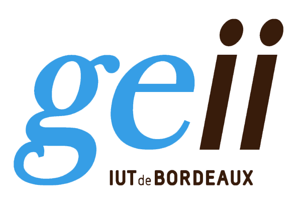

3+Années
d'études
À propos de moi
Actuellement en BUT GEII à l'IUT de Bordeaux, je combine curiosité rigueur et ponctualité.
Cliquez sur le logo GEII pour être redirigé vers leur site.
Ma première année de formation m'a permis de forger de solides bases théoriques en électronique, en gestion de l'énergie et en automatisme. Surtout, au travers de mes projets pratiques (SAE), j'ai appris à piloter le développement d'un système de A à Z : de la définition stricte du cahier des charges au routage du circuit imprimé (PCB), jusqu'à la programmation des microcontrôleurs en C++.
C'est cette dimension de création concrète qui m'a naturellement poussé à choisir la spécialité Électronique et Systèmes Embarqués (ESE). En dehors des cours, je nourris cette curiosité technique à travers divers projets personnels : développement d'applications Python, création d'interfaces web, ou encore assemblage de capteurs environnementaux pour la domotique.
Mon objectif professionnel ? Concevoir des systèmes intelligents, fiables et embarqués qui répondent à des défis technologiques concrets, que ce soit dans le domaine de l'Internet des Objets (IoT), de la sécurité domestique, de l'aéronautique ou du secteur spatial.
Télécharger mon CV